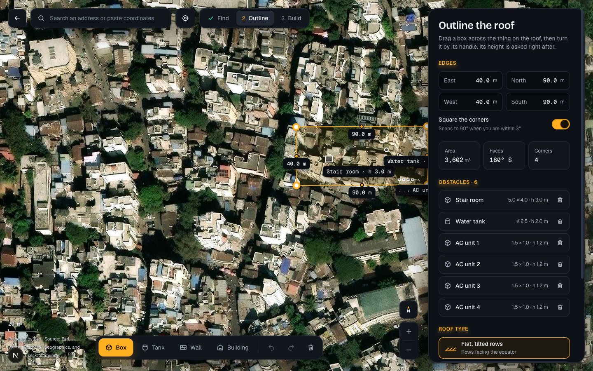
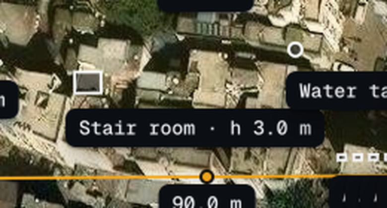
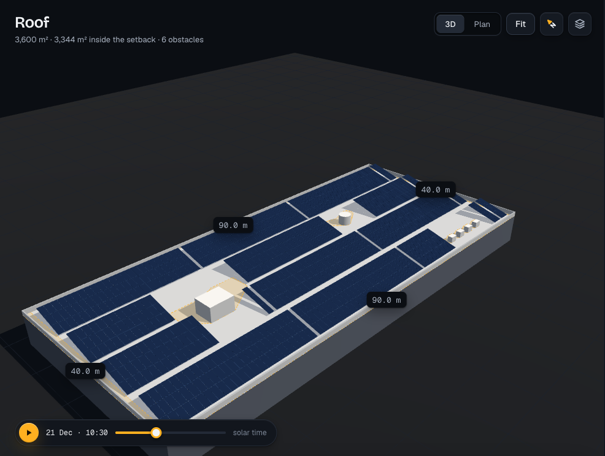

Once the roof is outlined (by corners, a rectangle or Detect building) it can be picked up whole, moved and turned, on Find's map, against the imagery: the Roof lens's Edit leads there. In the Studio's stage the roof is the origin of everything, and turning it there would turn the sun, the rows and the energy with nothing to check it against. Obstacles move and turn on the map as they already do on the Studio's roof. The tips are small cards at the map's edge, one at a time, shown when a move becomes possible, never over what is moved: Got it closes a tip for good on this device, and it also goes by itself once the move it explains is done; the ? of the toolbar shows the tips again. Desktop: a click picks, a drag moves, the arrow keys nudge; the cursor says what a drag does.


